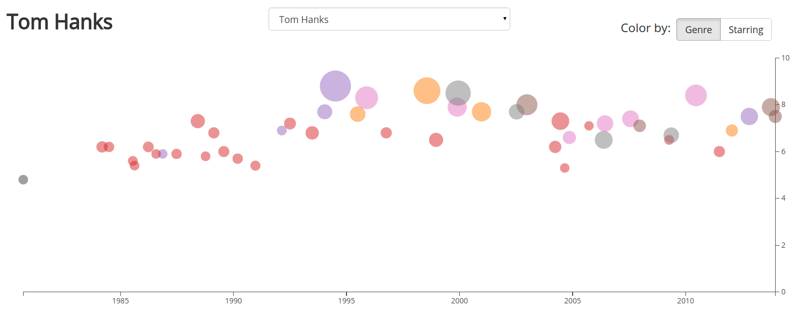
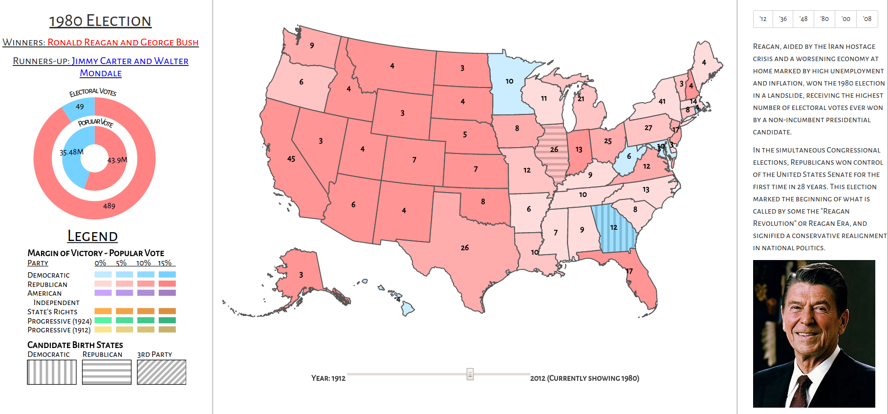
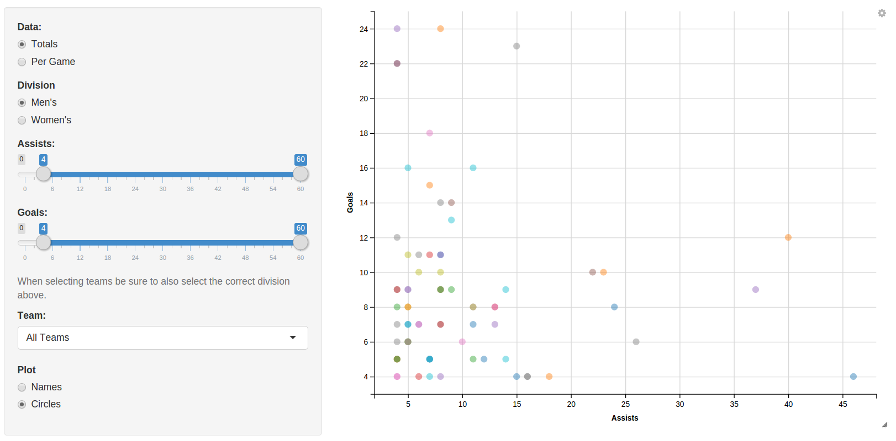
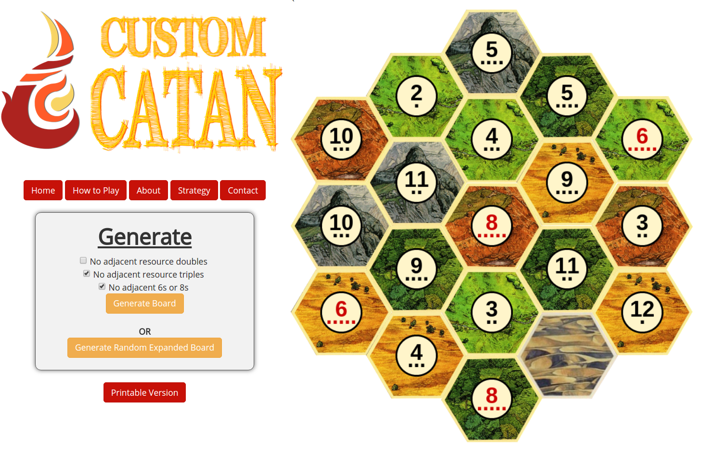

Plotting Actor's Careers

Category: Data Visualization, Web Scraping
Made With: JavaScript, D3.js, Python
See Code: GitHub
A condensed look at all of the movies an actor or actress has been in.
American Electoral Politics - The Past 100 Years

Category: Data Visualization
Made With: JavaScript, D3.js
See Code: GitHub
An interactive choropleth + other visualizations to view American electoral politics from the past century.
Rondo - Connect Four AI using Minimax
 Category: Algorithms
Category: Algorithms
Made With: Python
See Code: GitHub
An artificial-intelligence connect four opponent, affectionately nicknamed Rondo, implemented with the minimax algorithm.
Stat Leaders - 2015 College Ultimate Frisbee Nationals

Category: Data Visualization, Web Scraping
Made With: R, Shiny, Python
See Code: GitHub
A web-scraping and data visualization project looking at all of the players and teams during the 2015 College Ultimate Frisbee Nationals.
Custom Catan

Category: Web Apps, Algorithms
Made With: JavaScript, PHP
A web app that generates random Settlers of Catan boards, allowing the user to choose custom balance settings.
Harvard Indoor Ultimate League

Category: Data Visualization
Made With: R, Shiny
See Code: GitHub
A data visualization of the players and teams in the Harvard 2014 winter indoor ultimate frisbee league.